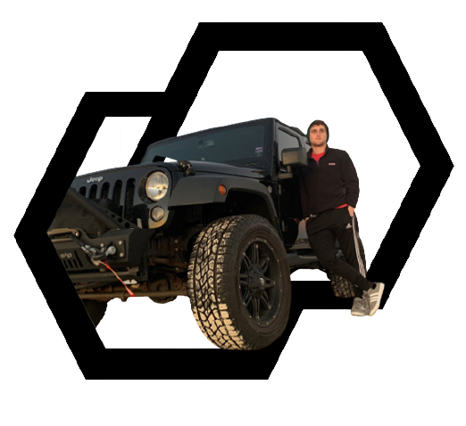

January20

About Me
Graduation with Leadership Distinction in Research
Hello, my name is Matt Duggan. I am a dual degree undergraduate in Biological and Computer Science in the Honors College at the University of South Carolina.
I aspire to earn a Ph.D. related to Computational Biology. My research will continue developing the bond between ecological and computational biology, focusing on the link between fauna behavior and human pressures.
Throughout my page, I hope to demonstrate my growing passion to study our natural world and how my experiences at UofSC shaped these interests.

Leadership
Into the Future: Graduate School
I have always been infatuated with wildlife and I want to understand, and hopefully slow, the mass biodiversity decline around the world. Being tenaciously independent, learning from past failures, and discovering global links that influence the world’s ecosystems, I am motivated to broaden my skill sets into biology and computer science to provide a unique perspective into my graduate studies.
In more detail, I describe my most recent project proposal for Ph.D. study that addresses how we could mitigate our impact on the marine ecosystem by listening to fish. This proposal will plan to study the state of our most vulnerable water systems, including estuaries and coral reefs.